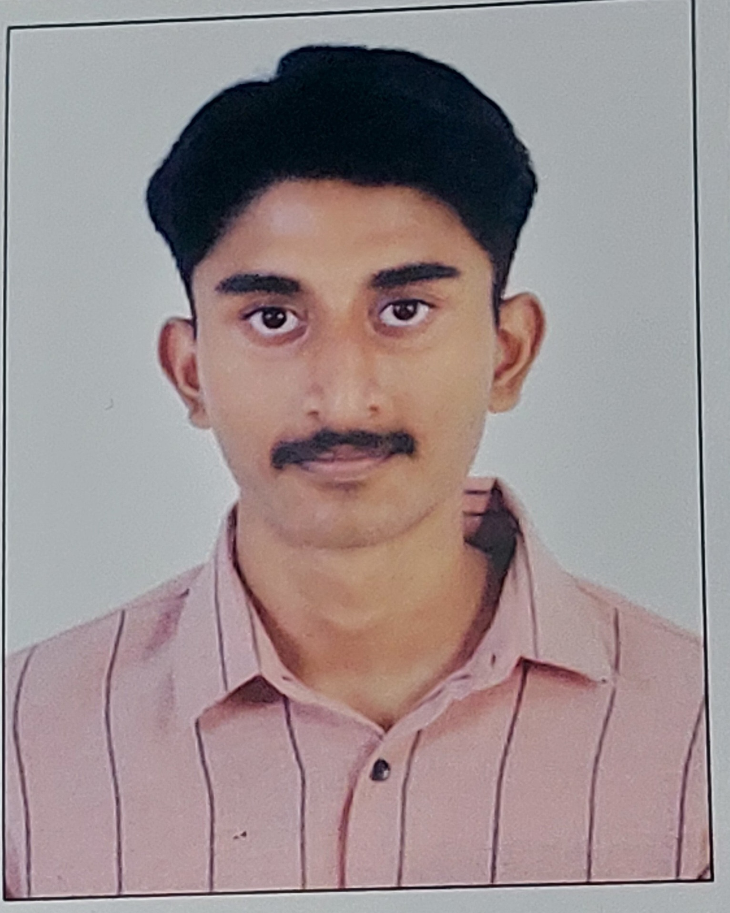

J JEYA ARJUN

PROFESSIONAL SUMMARY:
Motivated Computer Science and Engineering student at St. Joseph's with a strong foundational focus on full-stack web development. Developing practical, hands-on expertise in the MERN stack (MongoDB, Express.js, React, Node.js) through personal projects and coursework. Eager to apply technical problem-solving abilities in an entry-level development role.
EDUCATION:
St. Joseph's College of Engineering (OMR), Chennai
Bachelor of Engineering (B.E.) in Computer Science / Cybersecurity
- Duration: 2026–2030 (Expected)
- Relevant Coursework: Problem Solving and Python Programming, C Programming, Data Structures (Current)
Mahatma Montessori Matriculation Higher Secondary School, Madurai
- Year of Completion: 2026
- Percentage: 66%
TECHNICAL SKILLS:
- Web Development: HTML5, CSS3, JavaScript (ES6)
- Frontend/Backend: React, Node.js, Express.js (In Progress)
- Databases: MongoDB
- Programming Languages: C, Python
PROJECTS:
Personal Portfolio Website | MERN Stack
- Designed and deployed a responsive personal portfolio website to showcase academic projects.
- Developed the frontend using React and managed basic routing for seamless navigation.
Mini C Programming Projects | C Language
- Built a text-based library management system using C structures and file handling.
AWARDS & EXTRACURRICULARS:
- Member: College Coding Club / Computer Society of India (CSI) student chapter.
- Participant: Internal college hackathons and technical symposiums.
- Volunteer for school-level science exhibitions.
OTHERS: